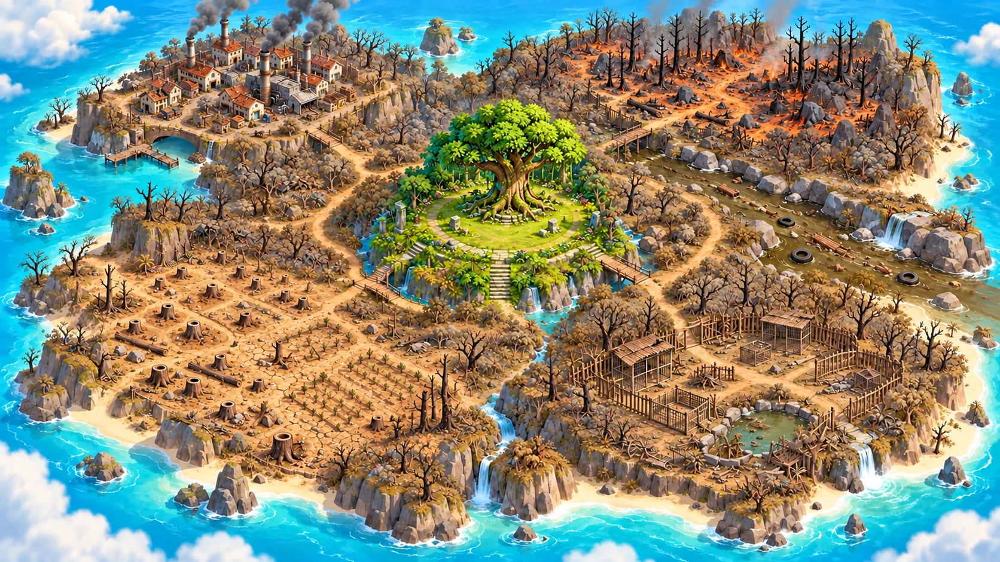

MAPA DAS FASES
A ilha ocupa a tela inteira. O título fica sobre o mapa, no alto. As cinco fases estão marcadas por placas. As informações ficam na parte inferior. O retrato de Kai marca a fase atual. A restauração é conquistada ao concluir cada missão.